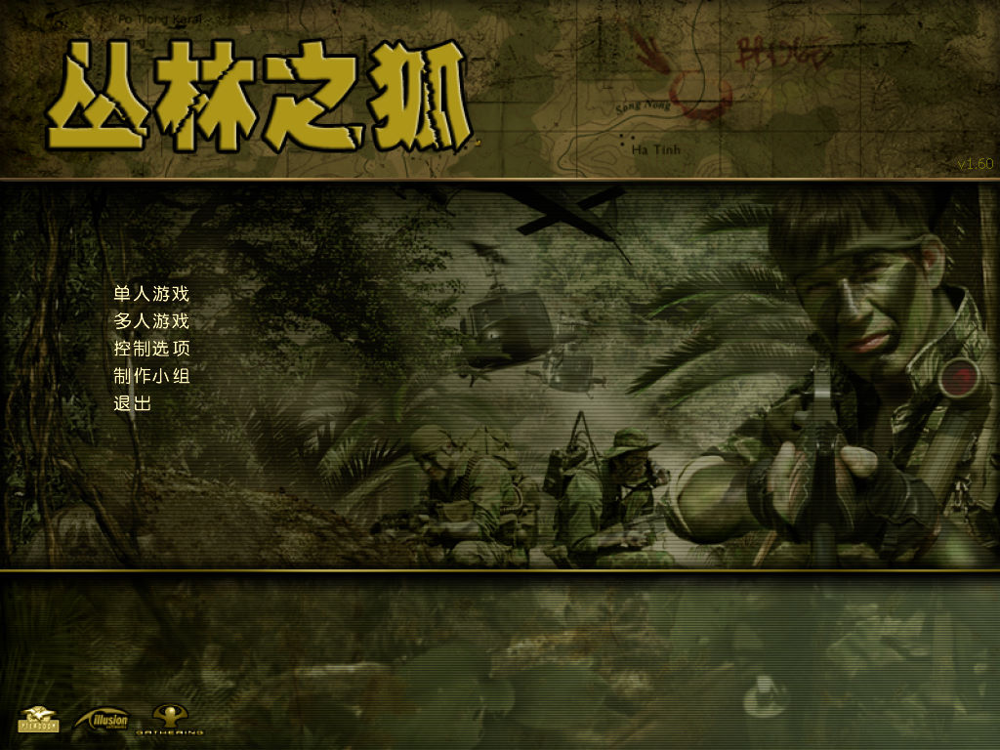
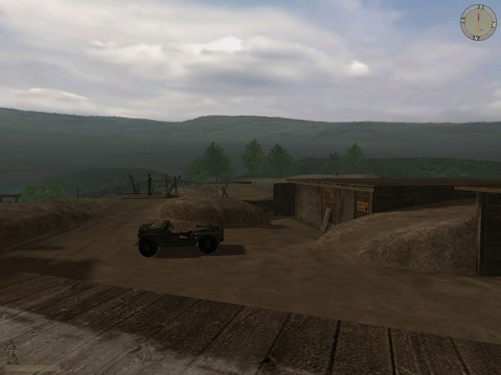
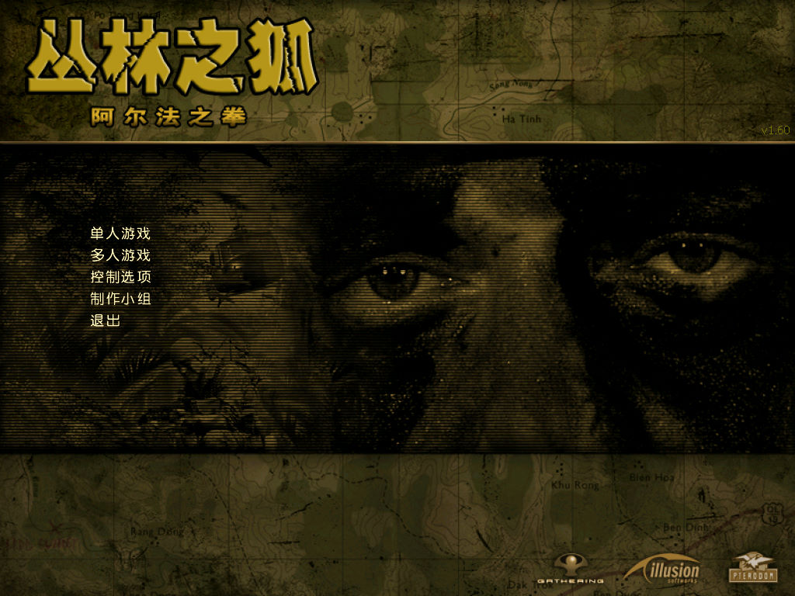

名稱：叢林之狐1／越戰1 (Vietcong，簡中／英文版)
簡介：Pterodon與Illusion Softworks 2003年開發的第一人稱戰術射擊遊戲，由Gathering
代理發行，2004年推出「阿爾法之拳／鐵拳阿爾法（Fist Alpha）」資料片，大陸由
世紀雷神簡中化並代理發行 [待補]。



保護：簡中版主程式為光碟，資料片無保護
英文版主程式為光碟SecuROM 4.84，資料片為光碟SecuROM 5.00
備註：主程式簡中光碟有2003版和2004版兩種，前者為1.30版，後者為1.60版。
1.30簡中版檔案含簡中文字，只能在簡中系統上執行（1.60版均為英文名稱）。
備註：資料片英文版為2CD，必須依附主程式，會將主程式更新至1.50版。
簡中版為4CD，可獨立安裝執行（1.60版）。
備註：主程式VirtualBox無法執行（簡中資料片可以），虛擬機請使用VMware。